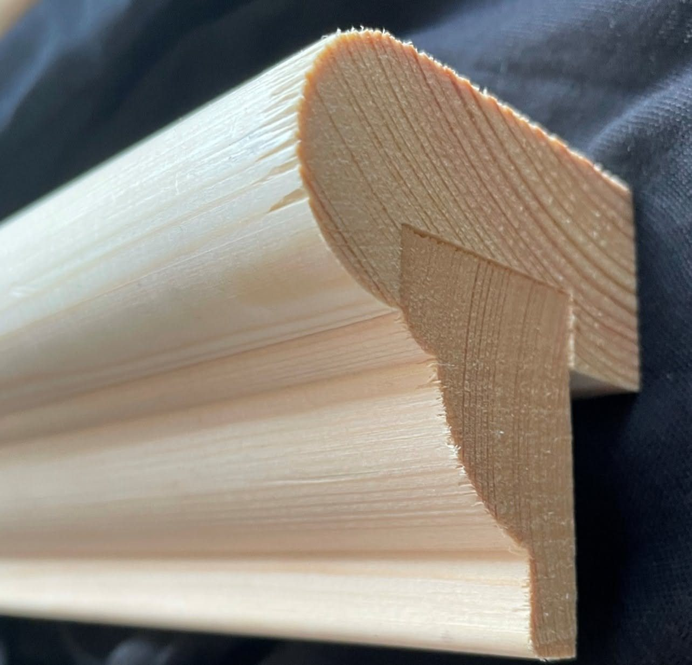

08 / 13
수선
수선은 깨지거나 벌어진 액자를 고치는 일로, 열두 가지 값을 정해 두었습니다.
- 당일 수선
- 유리·뒷판·고리 교체
- 상담
- 무료
수선 열두 가지
- 유리 교체(30 × 40 cm 이하)
12,000원
깨진 유리를 걷어 내고 일반 유리를 새로 넣는다
- 유리 교체(그보다 큰 것)
8,000원 + 유리 ㎡ 단가
공임 8,000원에 유리 값을 더한다
- 유리를 아크릴로
8,000원 + 아크릴 ㎡ 단가
무게를 줄이거나 택배로 보낼 때
- 모서리 다시 맞춤
15,000원 모서리 하나
벌어진 연귀를 풀어 다시 붙이고 핀을 박는다
- 몰딩 흠 메움·칠
10,000원 흠 한 곳부터
원목은 같은 결로 메우고, 금박은 맡지 않는다
- 뒷판 교체
12,000원
휘거나 젖은 뒷판을 MDF 3 mm로 바꾼다
- 고리·줄 교체
5,000원
고리 나사 둘과 철사 줄
- 매트 교체
18,000원 30호 이하
누렇게 변한 매트를 중성 매트로 바꾼다
- 액자 크기 줄이기
30,000원
몰딩을 다시 잘라 연귀를 새로 맞춘다
- 곰팡이 처리(종이 작품)
40,000원 반절부터
마른 붓으로 걷어 내고 그늘에서 말린다. 얼룩은 남을 수 있다
- 족자 끈·축 교체
35,000원
삭은 끈과 갈라진 축머리를 바꾼다
- 보존 상담
무료
작품을 가져오면 상태를 보고 할 일과 값을 알려 준다
완성일은 오늘 맡긴 경우다. 금박 몰딩의 흠과 다른 공방이 짠 병풍은 맡지 않는다.